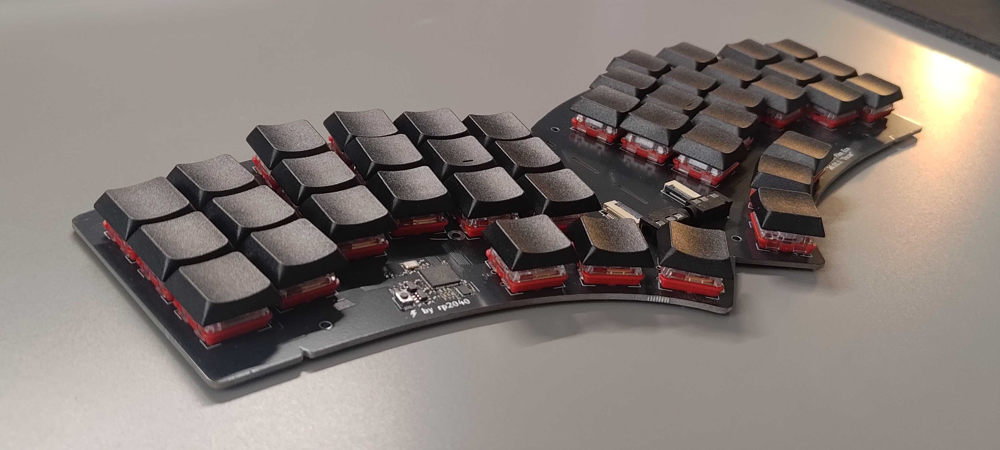
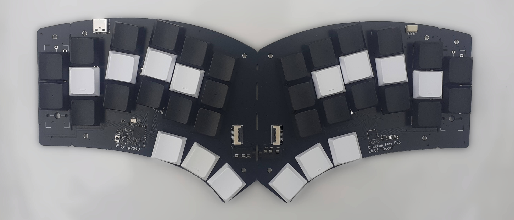
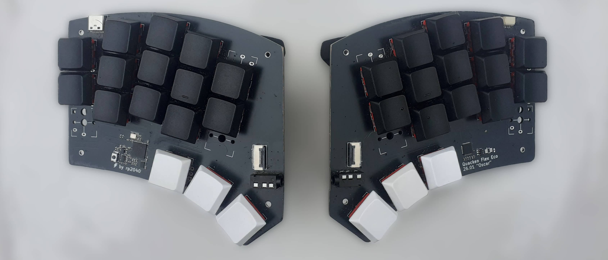
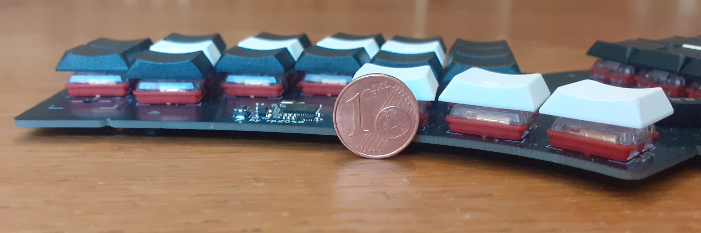

Libre. Ergonomic. Polymorphic.

The Quacken fully embraces a radial geometry. It’s designed to type with hands flat and relaxed on the table.
During our tests, we’ve seen that this kind of geometry is quite an all-in-or-fold thing: geometries with mild stagger / splay don’t really work. Ortholinear keebs work and are easy to use, adding a touch of stagger might help a bit (the Corne has become sort of a standard), but just increasing the stagger will eventually degrade the comfort.
The radial geometry requires a lot of stagger and splay to work. The “sweet spot” has been found incrementally: we’ve fine-tuned the geometry millimeter by millimeter, degree by degree, testing our keebs with very different hand sizes. We’re happy to share our findings, as the Quacken is an open-hardware project.

The Quacken is unibody by default.
We believe most keyboard out there are poorly designed, and split geometries are just a way to make them usable. Shifting the responsibility to the user, letting them find a good upper body position to accommodate the keyboard geometry, is much easier than designing a truly ergonomic geometry from scratch.
The Quacken has been designed for a 30° angle between both arms. This fits most situations: sit down, put the keeb in front of you, push the keeb away a bit if you feel your elbows are too far from your body, or pull it closer to you if you feel your elbows are too tight, and you’re set. The proper position is found in seconds, not weeks.

Your keyboard, your rules! We recommend starting with a unibody configuration, but you can split your keeb any time: grab a hacksaw and an FFP2/N95 mask, follow the pre-cut line, polish the edge with sandpaper — there, you have a split keyboard. Connect the two parts with a TRRS cable, the connectors are pre-soldered.
One of the cool things to do with a split keyboard is to add some tenting. The Quacken is compatible with the SplitKB tenting puck.
You can also decide to remove the outer pinky columns. They come with a hole so you can upcycle them as key holders. :-) This takes less room on your desk of course, but it also makes it much more comfortable to use in a split configuration, as your hands can still rest on the table.
The two pinky columns and the inner index columns have two sets of positions, to fit either two or three keys. We recommend the 40-key “Owl” configuration by default, but your keyboard, your rules: pick the 42-key config if you want Shift keys under the pinkies, or experiment with Hummingbird-like geometries by using only two keys on your pinky / index columns — make this keyboard yours.
It’s quite common to start with rather big keyboards and switch to smaller configs as the experience grows. The Quacken has been designed to stay with you all along your journey in the rabbit hole of ergonomic keyboards.

No keyboard is ergonomic if you have to angle your wrists, and nobody likes wrist rests. The Quacken has been designed around Choc switches to remain close to the table.
We’re working on a casing that comes above the board, to keep the keeb as low-profile as possible.
Without a proper firmware and keymap, compact keyboards can be very frustrating.
The Quacken comes with an Ækeynox firmware, to implement and configure a Selenium keymap. Selenium is used by many users on different keyboards — not only the Quacken — and it’s been designed to work at any typing speed, in order to stay relevant as you progress with your keeb.
Besides, Selenium is very close to Arsenik, which can be used on any standard ANSI or ISO keyboard. By using Selenium on your Quacken and Arsenik on your laptop, you’ll use the same muscle memory, and switching between the Quacken and your laptop will be transparent.